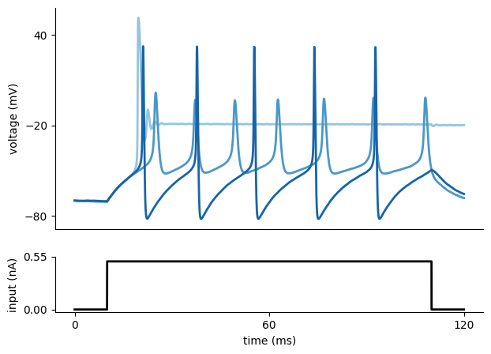
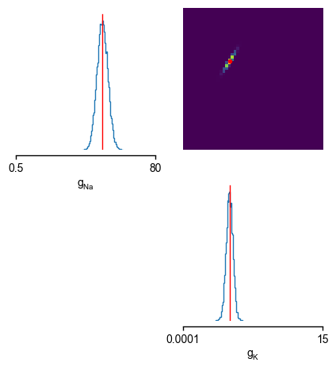

Inference on Hodgkin-Huxley model: tutorial¶
In this tutorial, we use sbi to do inference on a Hodgkin-Huxley
model from
neuroscience (Hodgkin and Huxley, 1952).
We want to infer the posterior distribution of two parameters (\(\bar g_{Na}\),\(\bar g_K\)) based on a current-clamp recording, that we generate synthetically (in practice, this would be an experimental observation).
Note, you find the original version of this notebook in the sbi repository under
tutorials/Example_00_HodgkinHuxleyModel.ipynb.
First we are going to import basic packages.
# visualization
import matplotlib as mpl
import matplotlib.pyplot as plt
import numpy as np
import torch
from sbi import analysis as analysis
# sbi
from sbi import utils as utils
from sbi.inference import NPE, simulate_for_sbi
from sbi.utils.user_input_checks import (
check_sbi_inputs,
process_prior,
process_simulator,
)
# remove top and right axis from plots
mpl.rcParams["axes.spines.right"] = False
mpl.rcParams["axes.spines.top"] = False
Different required components¶
Before running inference, let us define the different required components: 1. observational data - the observations in this case a simulated volatge trace (or summary statistics thereof) 1. a candidate (mechanistic) model - the simulator in this case the Hodgkin-Huxley model 1. the - prior over the model parameters in this case over (\(\bar g_{Na}\),\(\bar g_K\))
Note: that you do not need to fully understand the details of the HH-model and model specific jargon to get an intuition for how SBI works in this scientific use case.
1. Observed data¶
Let us assume we current-clamped a neuron and recorded the following voltage trace:

In fact, this voltage trace was not measured experimentally but synthetically generated by simulating a Hodgkin-Huxley model with particular parameters (\(\bar g_{Na}\),\(\bar g_K\)). We will come back to this point later in the tutorial.
2. Simulator¶
We would like to infer the posterior over the two parameters (\(\color{orange}{\bar g_{Na}}\),\(\color{orange}{\bar g_K}\)) of a Hodgkin-Huxley model, given the observed electrophysiological recording above. The model has channel kinetics as in Pospischil et al. 2008, and is defined by the following set of differential equations (parameters of interest highlighted in orange):
Above, \(V\) represents the membrane potential, \(C_m\) is the membrane capacitance, \(g_{\text{l}}\) is the leak conductance, \(E_{\text{l}}\) is the membrane reversal potential, \(\bar{g}_c\) is the density of channels of type \(c\) (\(\text{Na}^+\), \(\text{K}^+\), M), \(E_c\) is the reversal potential of \(c\), (\(m\), \(h\), \(n\), \(p\)) are the respective channel gating kinetic variables, and \(\sigma \eta(t)\) is the intrinsic neural noise. The right hand side of the voltage dynamics is composed of a leak current, a voltage-dependent \(\text{Na}^+\) current, a delayed-rectifier \(\text{K}^+\) current, a slow voltage-dependent \(\text{K}^+\) current responsible for spike-frequency adaptation, and an injected current \(I_{\text{inj}}\). Channel gating variables \(q\) have dynamics fully characterized by the neuron membrane potential \(V\), given the respective steady-state \(q_{\infty}(V)\) and time constant \(\tau_{q}(V)\) (details in Pospischil et al. 2008).
The input current \(I_{\text{inj}}\) is defined as
from HH_helper_functions import syn_current
# current, onset time of stimulation, offset time of stimulation, time step, time, area of some
I_inj, t_on, t_off, dt, t, A_soma = syn_current()
The Hodgkin-Huxley simulator takes the parameters as input together with other arguments such as the initial voltage state, the integration timestep, time and injected current:
from HH_helper_functions import HHsimulator
Putting the input current and the simulator together:
def run_HH_model(params):
params = np.asarray(params)
# input current, time step
I_inj, t_on, t_off, dt, t, A_soma = syn_current()
t = np.arange(0, len(I_inj), 1) * dt
# initial voltage V0
initial_voltage = -70
voltage_trace = HHsimulator(initial_voltage, params.reshape(1, -1), dt, t, I_inj)
return dict(data=voltage_trace.reshape(-1), time=t, dt=dt, I_inj=I_inj.reshape(-1))
To get an idea of the output of the Hodgkin-Huxley model, let us generate some voltage traces for different parameters (\(\bar g_{Na}\),\(\bar g_K\)), given the input current \(I_{\text{inj}}\):
# three sets of (g_Na, g_K)
params = np.array([[50.0, 1.0], [4.0, 1.5], [20.0, 15.0]])
num_samples = len(params[:, 0])
sim_samples = np.zeros((num_samples, len(I_inj)))
for i in range(num_samples):
sim_samples[i, :] = run_HH_model(params=params[i, :])["data"]
# colors for traces
col_min = 2
num_colors = num_samples + col_min
cm1 = mpl.cm.Blues
col1 = [cm1(1.0 * i / num_colors) for i in range(col_min, num_colors)]
fig = plt.figure(figsize=(7, 5))
gs = mpl.gridspec.GridSpec(2, 1, height_ratios=[4, 1])
ax = plt.subplot(gs[0])
# plot the three voltage traces for different parameter sets
for i in range(num_samples):
plt.plot(t, sim_samples[i, :], color=col1[i], lw=2)
plt.ylabel("voltage (mV)")
ax.set_xticks([])
ax.set_yticks([-80, -20, 40])
# plot the injected current
ax = plt.subplot(gs[1])
plt.plot(t, I_inj * A_soma * 1e3, "k", lw=2)
plt.xlabel("time (ms)")
plt.ylabel("input (nA)")
ax.set_xticks([0, max(t) / 2, max(t)])
ax.set_yticks([0, 1.1 * np.max(I_inj * A_soma * 1e3)])
ax.yaxis.set_major_formatter(mpl.ticker.FormatStrFormatter("%.2f"))
plt.show()

As can be seen, the voltage traces can be quite diverse for different parameter values.
Often, we are not interested in matching the exact trace, but only in matching certain features thereof. In this example of the Hodgkin-Huxley model, the summary features are the number of spikes, the mean resting potential, the standard deviation of the resting potential, and the first four voltage moments: mean, standard deviation, skewness and kurtosis. Using the function calculate_summary_statistics() imported below, we obtain these statistics from the output of the Hodgkin Huxley simulator.
from HH_helper_functions import calculate_summary_statistics
Note: the summary features depend on the simulator and observations under investigation. Check out our tutorials on crafting summary statistics.
Lastly, we define a function that performs all of the above steps at once, to have one object we pass to the inference method as our simulator. The function simulation_wrapper takes in the parameters, runs the Hodgkin Huxley model and then returns the summary statistics.
def simulation_wrapper(params):
"""
Returns summary statistics from conductance values in `params`.
Summarizes the output of the HH simulator and converts it to `torch.Tensor`.
"""
obs = run_HH_model(params)
summstats = torch.as_tensor(calculate_summary_statistics(obs))
return summstats
Note:
sbitakes any function as simulator. Thus,sbialso has the flexibility to use simulators that utilize external packages, e.g., Brian (http://briansimulator.org/), nest (https://www.nest-simulator.org/), or NEURON (https://neuron.yale.edu/neuron/). External simulators do not even need to be Python-based as long as they store simulation outputs in a format that can be read from Python. All that is necessary is to wrap your external simulator of choice into a Python callable that takes a parameter set and outputs a set of summary statistics we want to fit the parameters to.
3. Prior over model parameters¶
Now that we have the simulator, we need to define a function with the prior over the model parameters (\(\bar g_{Na}\),\(\bar g_K\)), which in this case is chosen to be a Uniform distribution:
Note: This is where you would incorporate prior knowlegde about the parameters you want to infer, e.g., ranges known from literature.
prior_min = [0.5, 1e-4]
prior_max = [80.0, 15.0]
prior = utils.torchutils.BoxUniform(
low=torch.as_tensor(prior_min), high=torch.as_tensor(prior_max)
)
# Check prior, simulator, consistency
prior, num_parameters, prior_returns_numpy = process_prior(prior)
simulation_wrapper = process_simulator(simulation_wrapper, prior, prior_returns_numpy)
check_sbi_inputs(simulation_wrapper, prior)
Running inference¶
Now that we have all the required components, we can run inference with NPE to identify parameters whose activity matches this trace.
Note that this might take a few minutes.
# Create inference object. Here, NPE is used.
inference = NPE(prior=prior)
# generate simulations and pass to the inference object
theta, x = simulate_for_sbi(simulation_wrapper, proposal=prior,
num_simulations=300, num_workers=4)
inference = inference.append_simulations(theta, x)
# train the density estimator and build the posterior
density_estimator = inference.train()
posterior = inference.build_posterior(density_estimator)
Neural network successfully converged after 296 epochs.
Note:
sbican parallelize your simulator. If you experience problems with parallelization, try settingnum_workers=1and please give us an error report as a GitHub issue.
Coming back to the observed data¶
As mentioned at the beginning of the tutorial, the observed data are generated by the Hodgkin-Huxley model with a set of known parameters (\(\bar g_{Na}\),\(\bar g_K\)). To illustrate how to compute the summary statistics of the observed data, let us regenerate the observed data:
# true parameters and respective labels
true_params = np.array([50.0, 5.0])
labels_params = [r"$g_{Na}$", r"$g_{K}$"]
observation_trace = run_HH_model(true_params)
observation_summary_statistics = calculate_summary_statistics(observation_trace)
As we have already shown above, the observed voltage traces look as follows:
fig = plt.figure(figsize=(7, 5))
gs = mpl.gridspec.GridSpec(2, 1, height_ratios=[4, 1])
ax = plt.subplot(gs[0])
plt.plot(observation_trace["time"], observation_trace["data"])
plt.ylabel("voltage (mV)")
plt.title("observed data")
plt.setp(ax, xticks=[], yticks=[-80, -20, 40])
ax = plt.subplot(gs[1])
plt.plot(observation_trace["time"], I_inj * A_soma * 1e3, "k", lw=2)
plt.xlabel("time (ms)")
plt.ylabel("input (nA)")
ax.set_xticks([0, max(observation_trace["time"]) / 2, max(observation_trace["time"])])
ax.set_yticks([0, 1.1 * np.max(I_inj * A_soma * 1e3)])
ax.yaxis.set_major_formatter(mpl.ticker.FormatStrFormatter("%.2f"))

Analysis of the posterior given the observed data¶
After running the inference algorithm, let us inspect the inferred posterior distribution over the parameters (\(\bar g_{Na}\),\(\bar g_K\)), given the observed trace. To do so, we first draw samples (i.e. consistent parameter sets \(\bar g_{Na}^{samples}\),\(\bar g_K^{samples}\)) from the posterior:
samples = posterior.sample((10000,), x=observation_summary_statistics)
fig, axes = analysis.pairplot(
samples,
limits=[[0.5, 80], [1e-4, 15.0]],
ticks=[[0.5, 80], [1e-4, 15.0]],
figsize=(5, 5),
points=true_params,
points_offdiag={"markersize": 6},
points_colors="r",
labels=labels_params,
);

As can be seen, the inferred posterior contains the ground-truth parameters (red) in a high-probability region. Now, let us sample parameters from the posterior distribution, simulate the Hodgkin-Huxley model for this parameter set and compare the simulations with the observed data:
# Draw a sample from the posterior and convert to numpy for plotting.
posterior_sample = posterior.sample((1,), x=observation_summary_statistics).numpy()
fig = plt.figure(figsize=(7, 5))
# plot observation
t = observation_trace["time"]
y_obs = observation_trace["data"]
plt.plot(t, y_obs, lw=2, label="observation")
# simulate and plot samples
x = run_HH_model(posterior_sample)
plt.plot(t, x["data"], "--", lw=2, label="posterior sample")
plt.xlabel("time (ms)")
plt.ylabel("voltage (mV)")
ax = plt.gca()
handles, labels = ax.get_legend_handles_labels()
ax.legend(handles[::-1], labels[::-1], bbox_to_anchor=(1.3, 1), loc="upper right")
ax.set_xticks([0, 60, 120])
ax.set_yticks([-80, -20, 40]);

As can be seen, the sample from the inferred posterior leads to simulations that closely resemble the observed data, confirming that NPE did a good job at capturing the observed data in this simple case.
References¶
A. L. Hodgkin and A. F. Huxley. A quantitative description of membrane current and its application to conduction and excitation in nerve. The Journal of Physiology, 117(4):500–544, 1952.
M. Pospischil, M. Toledo-Rodriguez, C. Monier, Z. Piwkowska, T. Bal, Y. Frégnac, H. Markram, and A. Destexhe. Minimal Hodgkin-Huxley type models for different classes of cortical and thalamic neurons. Biological Cybernetics, 99(4-5), 2008.